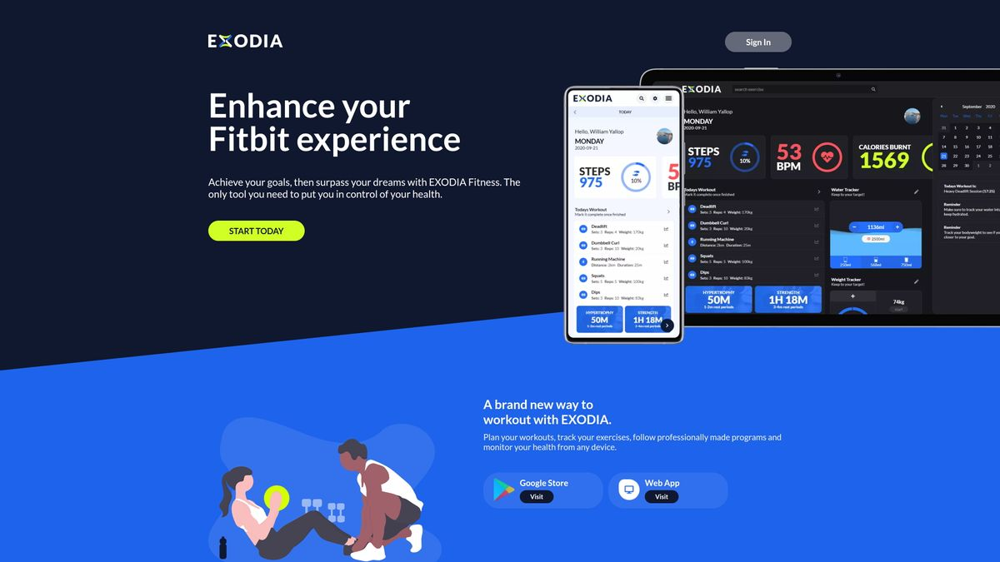

This is the marketing website for Exodia Fitness. A fitness tracking app that I built to learn VueJS, Stripe and Express.
HTML
SCSS
JS

This is the landing page / marketing site for the Exodia Fitness APP. It sports a striking, but rather simple design. This is just a standard multipage website, built in HTML, SCSS/CSS and JS only. No fancy frameworks.